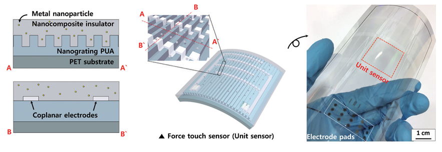
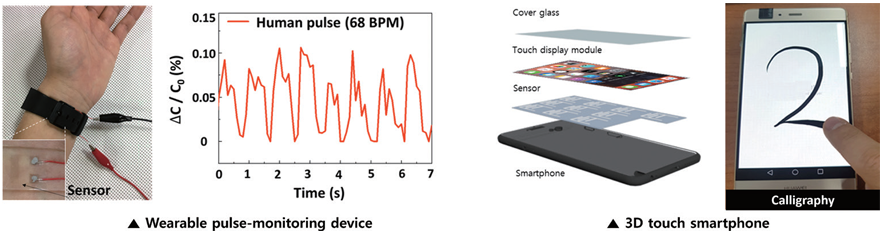

연구성과 10선
연구성과 10선
KAIST RESEARCH ACHIEVEMENTS
상용화 가능한 투명 유연
포스 터치 센서 개발
전기및전자공학부 윤준보
요약
포스 터치 센서는 외부로부터 가해진 압력의 위치뿐만아니라 크기까지도 인식 가능하여 스마트폰, 로봇, 웨어러블 장치 등 다양한 제품에 적용하기 위한 많은 연구가 진행되고 있다. 하지만 지금까지 개발된 포스 터치 센서는 민감도와 같은 특정 성능만 향상 시켰을 뿐 상용화에 필요한 민감도, 투과도, 유연성, 동작 신뢰성 및 재현성등 모두를 만족시키지 못해 아직 상용화에 한계를 가지고 있다. 이에 본 연구는 나노 복합 절연층 및 유연 나노그레이팅 기판에서 발생되는 응력 집중 현상과 센서 전극 디자인을 이용하여 상용화에 필요한 모든 성능을 만족시키는 세계 최고 수준의 고민감도 투명 유연 포스 터치 센서를 제작하였다. 더불어, 이를 맥박 모니터링 헬스케어와 스마트폰에 성공적으로 적용함으로써 본 센서가 다양한 응용 제품에 적용 가능한 상용화 수준의 센서임을 확인하였다.
연구배경
포스 터치 센서는 인식되는 터치의 위치 정보와 더불어 누르는 압력도 인식 가능한 기술로 실제 스마트폰에 집적돼 한 번의 터치만으로 다양한 기능을 제공할 수 있어 많은 관심을 받고 있다. 최근 포스 터치 센서를 스마트폰 뿐 아니라 플렉서블 기기를 포함한 다양한 응용 제품에 적용하기 위해 마이크로-나노 크기의 미세 구조를 이용한 민감도 및 유연성 향상 연구가 활발히 진행되고 있다.그러나 기존의 고성능 센서들은 특정 성능만을 향상시킴으로써 실제로 필요한 민감도, 유연성, 투명도, 재현성, 다양한 사용 환경에서의 동작 신뢰성 등의 총체적인 성능을 동시에 만족시키지 못해 상용화에 한계가 있었다. 대표적으로 압력에 따른 전도성 미세 구조의 접촉면적 변화를 이용한 압전 저항 센서는 고민감도의 센서 구현은 가능하였지만, 접촉 부분에서의 마모로 인해 반복 동작에 대한 낮은 신뢰성을 가지는 문제점이 있었다.
반면 압력에 따른 전극사이의 거리 변화를 극대화 하기 위해 다공성 절연층을 사용한 정전용량 센서는 민감도 향상과 반복 동작 신뢰성을 향상 시킬 수 있었지만, 다공성 구조 내부에서의 빛 굴절로 인한 낮은 투과도와 적층 구조의 두꺼운 두께로 인한 굽힘시 스트레스 및 변형이 발생하여 감지 성능이 변화한다는 문제가 있었다. 따라서 아직까지 상용화에 필요한 모든 성능들을 동시에 향상 시킨 상용화 수준의 포스 터치 센서가 필요한 상황이다. 본 연구팀은 기존 정전용량 센서의 문제 해결을 위해 포스 터치 센서는 공기를 포함한 간격을 갖는다는 기존 상식에서 벗어나 속이 가득 찬 센서를 제안하였다. 제안한 포스터치 센서는 내부에 압력에 따른 유전율 변화를 극대화할 수 있는 금속 나노 입자가 포함된 투명 나노 복합 절연층, 전극에 의한 빛 가림을 최소화하여 높은 투과도를 가지게 하는 동일 평면 전극과, 가해진 압력을 집중시켜 민감도를 높일 수 있는 나노그레이팅 구조의 유연 기판으로 구성되어 있다.
 그림 1. 제안하는 투명 유연 포스터치 센서와 7인치
 그림 2. 웨어러블 맥박 센서 구현과 포스 터치 센서가 집적된 스마트폰을 이용한 3D터치 데모
연구팀은 나노 복합 절연층과 유연 나노그레이팅 기판을 이용하여, 나노그레이팅의 골짜기 부분에 가해진 응력을 집중시켜 절연층 내부 나노파티클의 밀집도 변화를 증가시킴과 동시에 정전용량(유전율)의 변화를 증가시킴으로써 세계 최고 수준의 고민감도 투명 유연 포스 터치 센서를 제작하는 데 성공하였다. 또한, 연구팀은 감지 전극을 감지층의 상하부에 형성한다는 기존 방식에서 벗어나 동일평면(기계적 중립면)에 배치함으로써 볼펜심 정도의 극대화된 굽힘 정도에서도 성능의 변화 없이 동작하는 것을 확인했다. 마지막으로 대량 양산 시 주요 고려 사항인 대면적 균일성, 제작 재현성, 온도, 습도 및 장기 사용에 따른 신뢰성 등 역시 간단한 제작공정과 온도 및 수분에 대해 높은 내구성을 가지는 절연층을 공극 없이 센서를 제작함으로써 상용화 수준의 성능을 보여 주었다. 연구팀은 상용화 수준의 센서를 맥박 모니터링이 가능한 헬스케어 웨어러블 기기에 적용해 미세 압력인 실시간 맥박을 감지하였으며, 국내 포스 터치 센서 기업인 ㈜하이딥과 함께 7인치 대면적 센서를 스마트폰에 실제 장착해 실시간 압력 분포를 확인해 상용화 가능한 수준임을 증명 하였다.
기대효과
간단한 구조와 공정을 이용하여 개발된 상용화 수준의 포스 터치 센서는 상용화에 필요한 다양한 성능 향상 방법을 획기적으로 제안하여 포스 터치 센서 분야이외에 다양한 분야에서도 응용이 가능할 뿐만 아니라, 다양한 사용 환경에서 높은 신뢰성을 요구하는 사용자 터치 인터페이스와 웨어러블 기기에 널리 활용될 수 있을 것으로 기대된다.
연구성과
[논문 1] J. Y. Yoo, M. H. Seo, J. S. Lee, K. W. Choi, M. S. Jo, J. B. Yoon “Industrial Grade, Bending-Insensitive, Transparent Nanoforce Touch Sensor via Enhanced Percolation Effect in a Hierarchical Nanocomposite Film.” Advanced Functional Materials 28, 1804721 (2018).[2017 IF = 13.33].
[논문 2] J. Y. Yoo, M. H. Seo, J. S. Lee, K. W. Choi, M. S. Jo, H. J. Song, J. B. Yoon “Maximizing Percolation Effect Using Sub-100 nm Nano-valley for High Performance Wearable Transparent Pressure Sensor” 32nd IEEE International Conference on Micro Electro Mechanical Systems(MEMS) 2019.
[특허] 국내 특허 7건과 해외 특허 2건 출원
[언론보도]
- 연합 뉴스, 전자 신문, Science Daily을 비롯한 24개 국내외 언론보도
- 어드밴스드 사이언스 뉴스(Advanced Science News)에 영상 초록(Video Abstract) 소개
- Advanced Functional Materials Journal 후면 표지 논문 선정
[수상] 논문 2는 IEEE MEMS 2019 conference에서 우수 학생 논문상(Outstanding Student Paper Award) 수상 (490편의 학생 논문 중 3편에만 수여, 한국 소속 학생으로 최초 수상)